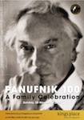
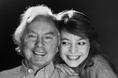
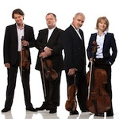

▸ Click here to download a press release for the festival.
▸ Click here to download the festival flyer.
|  |  |  | ||
▸ Flyer Image |
▸ Andrzej and Roxanna |
▸ Andrzej and Roxanna |
▸ Brodsky Quartet |
▸ Jacqui Dankworth |
Twelve Miniature Studies, No. 11 by Andrzej Panufnik (Clare Hammond, piano)
Hommage à Chopin, m. 4 by Andrzej Panufnik (Clare Hammond, piano)
Glo by Roxanna Panufnik (Clare Hammond, piano)
More information is available on the festival website.